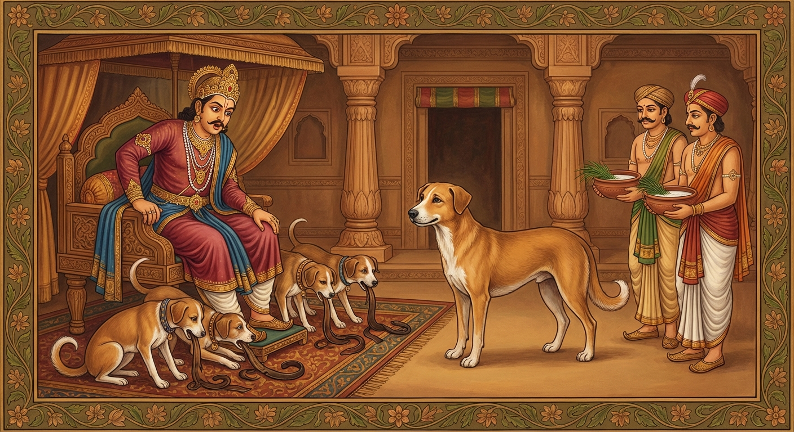

2. කුක්කුර ජාතකය (22)
“යෙ කුක්කුරා” යන මේ ජාතක දේශනාව බුදුරදුන් දෙව්රම් වෙහෙරෙහි වැඩවසන සමයෙහි, ඤාතීන්ට සංග්රහ කිරීම අරබයා දේශනා කරන ලද්දකි. එය දොළොස් වැනි නිපාතයෙහි භද්දසාළ ජාතකයෙහි පැහැදිලි වනු ඇත. උන්වහන්සේ ඒ වර්තමාන කථා පුවත පදනම් කොට ගෙන අතීත කථාව ගෙනහැර දැක්වූ සේක.
පෙර බරණැස බ්රහ්මදත්ත රජු රාජ්යය කරවන කල්හි, බෝසතාණෝ එබඳු කර්මයක් නිසා සුනඛ යෝනියෙහි ඉපිද, නොයෙක් සිය ගණන් සුනඛයන් පිරිවරා මහ සොහොන් බිමෙහි විසූහ. ඉක්බිති එක් දවසක් රජු සුදු සෛන්ධව අසුන් යෙදූ, සියලු අලංකාරයෙන් සැරසූ රථයට නැඟී උයනට ගොස්, දවල් කාලය එහි ක්රීඩා කොට හිරු බැස යන කල්හි නුවරට පිවිසියේය. රජුගේ රථය වරමදු හා රැහැන් සහිතව ම රජ මිදුලෙහි තබන ලදී. එදින රාත්රියෙහි වැසි වැටුණු කල්හි රථය තෙමිණි. උඩුමහලෙහි සිටි උසස් කුලයේ (මාලිගාවේ) සුනඛයෝ බැස අවුත් රථයෙහි සම් ද රැහැන් ද කෑහ. පසුවදා රජුට සැල කළහ: “දේවයිනි, ජලපවහන කාණුවෙන් සුනඛයෝ අවුත් රථයෙහි සම් ද රැහැන් ද කෑහ” යි කීහ. රජ සුනඛයන් කෙරෙහි කිපී, “දුටු දුටු තැන සුනඛයන් මරවු” යි අණ කළේය. එතැන් පටන් සුනඛයන්ට මහත් විපතක් ඇති විය. මරනු ලබන සුනඛයෝ පලාගොස් සොහොනට වැදී බෝසතුන් සමීපයට ගියහ.
බෝසත්හු, “නුඹලා බොහෝ දෙනෙක් රැස්වූයේ කුමන කරුණක් නිසාදැ?” යි විමසූහ. ඔවුන්, “ඇතුළු නුවර රථයේ සම් සහ රැහැන් සුනඛයන් විසින් කා දමා ඇති බැවින්, කිපුණු රජතුමා සුනඛ වධය පැනවීය. බොහෝ සුනඛයෝ විනාශයට පත්වෙති. මහත් බියක් උපන් බව” කීහ. බෝසතාණෝ කල්පනා කළහ: “රැකවරණ යොදා ඇති පෙදෙසින් පිටත සුනඛයන්ට ඇතුළුවීමට ඉඩක් නැත. රජමැදුර තුළ වසන කුලවත් (කොලෙය්යක) සුනඛයන්ගේම ක්රියාවක් වන්නේය. දැන් සොරුන්ට කිසි බියක් නැත. නිර්දෝෂී සුනඛයෝ මරණය ලබති. මම සොරුන් කවුරුන්දැයි රජුට පෙන්වා දී මගේ නෑ පිරිසට ජීවිත දානය ලබා දෙන්නේ නම් මැනවැ” යි සිතූහ. ඔහු ඤාතීන් අස්වසා, “ඔබලා බිය නො වන්න. මම ඔබ හැමට අභය රැගෙන එන්නෙමි. රජු හමුවී එන තුරු මෙහිම රැඳී සිටින්නැ” යි පවසා, පාරමිතාවන් සිහිපත් කොට, මෛත්රී භාවනාව පෙරදැරි කරගෙන, “මා මතට ගල් මුගුරු හෙළීමට කිසිවෙකුටත් ශක්තියක් නොවේවා!” යි අධිෂ්ඨාන කොට, හුදෙකලාව ම ඇතුළු නුවරට පිවිසියේය. බෝසතුන් දැක කිසිවකු කිපී බැලීමක්වත් නොකළහ. රජතුමා සුනඛ ඝාතනයට අණ දී තෙමේ විනිසුරු අසුනෙහි හුන්නේ විය. බෝසත්හු එතැනට ම ගොස් පැන රජුගේ අසුන යටට රිංගා ගත්හ. ඉක්බිති රාජ පුරුෂයෝ ඔහු ඉවතට ඇද දැමීමට උත්සාහ කළහ. නමුත් රජතුමා එය වැළැක්වීය.
බෝසත්හු මඳ වේලාවක් ගිමන් හැර අසුන යටින් එළියට අවුත් රජුට වැඳ, “දේවයිනි, ඔබ වහන්සේ සුනඛයන් මරවන්නේදැ?” යි ඇසූහ. “එසේය, මරවමි” යි රජ කීය. “මහරජ, ඔවුන්ගේ වරද කුමක් ද?” “මාගේ රථයෙහි සම් සහ රැහැන් සුනඛයන් විසින් කන ලදහ.” “මහරජ, කෑ සුනඛයන් කවුරුන්දැයි ඔබ දන්නේ ද?” “නො දනිමි.” “දේවයිනි, සම් කෑ සොරුන් හරිහැටි නො දැනම, දුටු දුටු තැන සුනඛයන් මරා දැමීම සුදුසු නො වේ.” “රියෙහි සම් සුනඛයන් විසින් කන ලද බැවින් දුටු දුටු තැන සියලු සුනඛයන් මරව යි මා අණ කළෙමි.” “ඔබතුමාගේ මිනිස්සු සියලු සුනඛයන් මරත් ද? නැතහොත් මරණය නො ලබන්නෝත් ඇත් ද?” “එසේ ඇත. අප රජ මැදුරෙහි වසන කුලවත් සුනඛයෝ මරණය නො ලබති.” “මහරජ, දැන් ඔබ රථ සම් කෑ නිසා ‘දුටු දුටු තැන සියලු ම සුනඛයින් මරව’ යි නියෝග කළ බව කීවා නො වේ ද? දැන් ඔබ කියන්නේ ‘අප ගෙදර කුලවත් සුනඛයන් මරණය නො ලබන’ බවයි. එසේ නම් එය ඡන්දය (කැමැත්ත) ආදී වශයෙන් අගතියට යාමක් (නො මඟ යෑමක්) නො වේ ද? අගති ගමන වනාහි රජුට සුදුසු නැත; රාජ ධර්මය ද නො වේ. කරුණු සොයන්නකු විසින් තරාදියක් මෙන් අපක්ෂපාතී විය යුතුය. දැන් සිදුවන්නේ කුලවත් බලවත් සුනඛයෝ මරණය නො ලැබීමත්, දුබල සුනඛයෝ මරණය ලැබීමත් ය. එසේ හෙයින් මෙය ‘සියලු සුනඛ ඝාතනයක්’ නො ව, ‘දුර්වලයන් ඝාතනය කිරීමක්’ පමණි.” මෙසේ පැවසූ මහාසත්ත්වයෝ මිහිරි ස්වරය විහිදුවමින්, “මහරජ, ඔබ යමක් කරයි නම් එය ධර්මය නො වේ” යි රජුට දම් දෙසමින් මේ ගාථාව කීහ:
“රාජ කුලයෙහි වැඩුණා වූ, එහෙයින් ම කුලවත් වූ, හැඩරුවින් හා කාය බලයෙන් යුත් යම් ඒ සුනඛයෝ වෙත් ද, ඔවුහු මා විසින් නො නැසිය යුත්තෝ ය. අපි ම නැසිය යුත්තෝ වෙමු. මේ සාධාරණ ඝාතනයක් නො වේ. දුර්වලයන් ඝාතනය කිරීමකි.”
එහි ‘යෙ කුක්කුරා’ යනු සුනඛයෝ ය. (ලෝකයේ සම්මතය පරිදි) මුත්ර දහර උණුසුම් වුව ද එය ‘පූතිමුත්ත’ (කුණු මුත්ර) යැයි ද, එදවස උපන් හිවලා ද ‘ජරසිඞ්ගාල’ (මහලු හිවලා) යැයි ද, මොළොක් වූ රසකිඳ වැල ‘පූතිලතා’ (කුණු වැල) යැයි ද, රන්වන් වූ සිරුර ‘පූතිකාය’ (කුණු කය) යැයි ද කියනු ලැබේ. එමෙන් සියවස් වූ ද සුනඛයා ‘කුක්කුර’ (බල්ලා) යැයි ම කියනු ලැබේ. එම නිසා මහලු වූ ද, කාය බලයෙන් යුක්ත වූ ද ඒ මාලිගාවේ සුනඛයෝ ‘කුක්කුරා’ (බල්ලන්) නමින් ම හැඳින්විණි. ‘වද්ධා’ යනු වැඩුණා වූ ය. ‘කොලෙය්යකා’ යනු රජකුලයෙහි උපන්, එහි ම ඇතිදැඩි වූ ය. ‘වණ්ණබලූපපන්නා’ යනු ශරීර වර්ණයෙන් ද කාය බලයෙන් ද යුක්ත වූ ය. ‘තෙමෙ න වජ්ඣා’ යනු හිමිකරුවන් ඇති, ආරක්ෂාව සහිත ඒ සුනඛයෝ නො නැසිය යුත්තෝ ය. ‘මයමස්ම වජ්ඣා’ යනු හිමිකරුවන් නැති, ආරක්ෂා රහිත අපි ම නැසිය යුත්තෝ බවට පත් විමුව. ‘නායං සඝච්චා’ යනු එසේ ඇති කල්හි මෙය අවිශේෂයෙන් කරන සාධාරණ ඝාතනයක් නම් නො වේ. ‘දුබ්බලඝාතිකාය’ යනු මේ ඝාතනය වනාහි දුබලයන් ම නසන හෙයින් දුබලයන් නැසීමකි. රජවරුන් විසින් දඬුවම් කළ යුත්තේ සොරුන්ට ය; නොසොරුන්ට නො වේ. නමුත් මෙහි දී නියම සොරුන්ට කිසි බියක් නැත. නොසොරු මරණය ලබති. “අහෝ! ලොව අසාධාරණය පවතී. අහෝ! අධර්මය පවතී.”
බෝසතුන්ගේ බස් අසා රජතුමා මෙසේ ඇසීය: “පණ්ඩිතයෙනි, අසවලුන් විසින් රථ සම් කන ලදැ යි ඔබ දන්නහු ද?” “එසේය, මම දනිමි.” “කවුරුන් විසින් කන ලද ද?” “මහරජ, ඔබගේ රජ මැදුරෙහි වෙසෙන කුලවත් සුනඛයන් විසිනි.” “ඔවුන් විසින් කන ලද බව අප දැන ගන්නේ කෙසේ ද?” “මම ඔවුන් විසින් කන ලද බව ඔප්පු කර පෙන්වන්නෙමි.” “පණ්ඩිතයෙනි, පෙන්වනු මැනවි.” “මහරජ, ඔබ ගෙහි කුලවත් සුනඛයන් ගෙන්වා, කිරිමෝරු ස්වල්පයක් හා ඊ තණ ගෙන්වනු මැනවි.” රජතුමා එසේ කළේය. එවිට මහාසත්ත්වයෝ, “මේ තණ කිරිමෝරු සමඟ පොඩිකර, මේ සුනඛයින්ට පොවන්නැ” යි රජුට කීහ. රජ එසේ කොට පෙවීය. එය බී සුනඛයෝ සම් කැබලි සමග වමනය කළහ. රජතුමා “මෙය සර්වඥ බුදුවරයකුගේ ප්රකාශයක් වැනි යැ” යි සතුටු වී බෝසතුන්ට රාජ්යයෙන් (සේසතින්) පූජා කළේය. බෝසත්හු, “මහරජ, ධර්මයෙහි හැසිරෙන්න; දෙමාපියන් කෙරෙහි දැහැමි වන්න” යනාදී වශයෙන් තේසකුණ ජාතකයෙහි එන ධම්මචරිය ගාථා දහයකින් රජුට දම් දෙසා, “මහරජ, මෙතැන් පටන් අප්රමාද වන්නැ” යි රජු පන්සිල්හි පිහිටුවා, සේසත රජුට ම ආපසු දුන්හ.

රජතුමා මහාසත්ත්වයාගේ ධර්ම දේශනාව අසා සියලු සතුන්ට අභය දානය දී, බෝසතුන් ප්රධාන කොට ඇති සියලු සුනඛයන්ට තමා ගන්නා ආහාරයට සමාන වූ බොජුන් නිතිපතා ලැබීමට සැලැස්වීය. හෙතෙම බෝසතුන්ගේ අවවාදයෙහි පිහිටා දිවි ඇති තාක් දානාදී පින්කම් කොට, මරණින් මතු දෙව්ලොව උපන්නේය. මේ ‘කුක්කුරෝවාදය’ (සුනඛ අවවාදය) වසර දසදහසක් පැවැතියේය. බෝසත්හු ද දිවි ඇති තෙක් සිට කම් වූ පරිදි මිය පරලොව ගියහ.
ශාස්තෘන් වහන්සේ, “මහණෙනි, තථාගත තෙමේ ඤාතීන්ට පිහිට වූයේ දැන් පමණක් නො වේ, පෙර ද පිහිට වූයේ යැ” යි වදාරා, මේ ධර්ම දේශනාව ගෙනහැර දක්වා, පූර්ව අපර සන්ධි ගළපා ජාතකය නිමවූ සේක. “එකල රජු වූයේ දැන් ආනන්ද තෙරණුවෝ ය. ඉතිරි පිරිස බුදු පිරිස ම ය. සුනඛ පණ්ඩිතයා වූයේ මම ම වෙමි.”
දෙවැනි වූ කුක්කුර ජාතක වර්ණනාවයි.